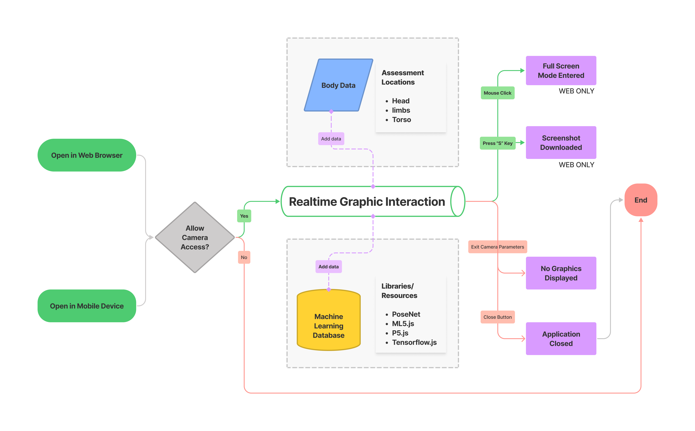

Hanul-Computer Interaction
Machine Learning + Visual Image Data + Human Pose Estimation
A Digital-Physical Experience with Movement-Based Interactivity Using Body Detection Technologies, a Discourse on the Collaborative Creative Practices of Designers and Machines
2021-2022
EXPLORE MOBILE VERSION
Tool | P5.js, Ml5.js
Code | JavaScript
Parsons Design & Technology Thesis Show 2022
I. CONCEPT
WHAT
Hanul-Computer Interaction (HCI) constructs a digital-physical experience with movement-based interactivity that utilizes machine learning library for human pose detection technology. The web and mobile based sketches let users draw real-time
graphic reflections of their bodies on screen.
“Draw With Your Own Bodies!”
WHY
This process-oriented work considers the collaborative creative practices of the designer and the machine. While working on multiple machine learning projects, the designer, Hanul, and the machine, Computer, formed an interdependent and
intimate partnership. The real-time interaction between the user and the graphic represents the designer-machine interaction. Hanul-Computer Interaction (HCI) hopes to contribute to the growing and evolving conversation about AI & ML Art &
Design.
The constructed experience expresses a sense of melancholia from human species’ collective becoming of digital data due to the rapidly advancing facial recognition and body detection technologies. It critiques how such
digitized human data are surveilled, censored, and owned by actively rejecting data collection and individual profiling.
HOW
The product utilizes PoseNet tool from ml5.js library to capture real-time body movements of users, based on human body data trained with tensorflow.js. The blurry graphic style is intended for thorough anonymization of participants. The
intentional abstraction resists individual profiling and datafication of human image. By playing with the interactive interface, the users organically participate in the critical conversation.
“Let My Critique Be Fun!”
II. PROCESS
Approach
This is a project focused more on process than production. If this project was a painting, its primary purpose would be to study a subject rather than to draw an object. I am not only the creator but more importantly the curator, and my curation becomes a pivotal element of the project.
Brainstorm
Research
I reflect on my collaborative working experience with my computer in the light of “Actor-Network Theory” based on autoethnographic and digital-ethnographic methods. The final product is a visual and computational expression of my investigation and contemplation. I am particularly interested in the ideas of agency & authorship that emerge in my intimate relationship with my machine.
III. PROJECTS
1. Family Photo-Painting Album
◍ Platform: RunwayML (Style Transfer)
◍ Input: selected original photos of my partner & my dog
◍ Style: Famous Paintings; Cubism, Gogh, Hokusai, Kandinsky, Monet, Picasso, Wu Guanzhong
2. In Pixels
◍ Technology: Vector Quantized Generative Adversarial Network and Contrastive Language–Image Pre-training (VQGAN+CLIP)
◍ Platform: NightCafe (Text to Image)
◍ Input: Sappho. "Poems of Sappho" Translated by Julia Dunbnoff. University of Houston.
IV. PRODUCT
Design
The interactive interface reflects the designer’s experience of working with the machine. The experience offers the participants with the opportunity to embody such collaborative relations while playing with the product. The users experience and reflect on the direct co-creative interrelationship with the machine through their physical motions. The questions regarding materiality and virtuality arise. How do physical bodies interact with software interfaces, and how are the material movements manifested in the virtual realm?
Prototype I


Prototype II


Technology
The final product utilizes a machine learning model called PoseNet that enables real-time human pose estimation in the browser. The model is created by ml5.js, which is a powerful and accessible resource powered by TensorFlow.js and programmed in p5.js for creative sketching. When the product loads on the web browser, it immediately reads the visual data of users captured on the camera and estimates movements. The ml5.js library is completely open source. It’s been developed by a group of open-minded engineers, educators, and artists who shared the common interest in making machine learning technology accessible for public creativity.
Web Browser
Mobile Browser

V. USABILITY
User Scenario
The user uses their bodies and physical movements to interact with the product. The user either stands or sits while experiencing the sketch based on preferences, abilities/disabilities, or moods. The user faces an electronic, screen device of choice such as a desktop or mobile device in order to interact with the sketch. The user moves all or certain parts of their body to draw digital graphics of their reflected body data on the screen.
Testing Environment
The user testing takes place in person at an indoor or outdoor space with remote network access. The project is partially inaccessible for people with vision disabilities or impairments since they will not be able to see the reflected digital graphics on the screen although they can move in front of the sketch and have their body motion data read.
Flowchart
Touchpoints
◍ The user opens the application either on a web browser or in a mobile device
◍ The user is asked to approve of access to the device's camera
◍ The user's body data are captured in the camera
◍ The user's real-time movements are illustrated on the screen
◍ The user views the illustrations of their movement
◍ The user enters full-screen mode (web only)
◍ The user saves a screenshot of one or more moments of choice (web only)
Viewer Disclaimer
The colors in the graphics change consistently and swiftly, causing flashing of lights. Viewer discretions of people with vision sensitivities are required.
VI. REFLECTION
Analysis
The keywords agency and authorship are significant in my reflections. The word "agency" means "the capacity, condition, or state of acting or of exerting power," synonymous with "operation", according to the Merriam-Webster dictionary. The word "authorship" means "the state or act of writing, creating, or causing" according to the same source. The idea of agency emphasizes the "capacity, condition, or state" of the creative act, whereas the sense of authorship focuses on the act itself whether it is of "writing, creating, or causing" in the creative processes. If agency signifies the state of creation, authorship notes the action of creativity.
"Agency"
In terms of agency, there have been two primary reflections on the state of creation for my final product. The human and the computer are both equally important creators and collaborators. This is based on the understanding of
Actor-Network Theory that "humans are not privileged among countless actors/actants, all of which are ontologically symmetrical." This idea points to the immediate, simultaneous, and irreplaceable presences of both human and machine
participants in my product. Each of the human and the machine completes the premise of the project, and neither one of them is capable of sustaining the sketch without the other.
The human and the computer are elevated thanks to their shared state of agency. This realization relates to the notion in Actor-Network Theory that "actors/actants gain strength only through their alliances. These
propositions have specific implications for data generation, analysis, and reporting." The agency of the human includes creating physical motions but also reacting to the visual results on the computer and making next movements based on what
they see. The agency of the machine is not only its digital drawings but also its incessant registration of the human's changing motions. Their collaborative and codependent relations to each other enhance each of their sense of agency, and
as a result, allow for the production of real-time, interactive sketching.
"Authorship"
When it comes to authorship, there are two significant understandings in relation to my final product. The human and the computer are in a singular and mutual authorship rather than two separate, respective authorships. Based on
Actor-Network Theory, "actors/actants transform to a different state via mediation when they encounter each other." In my project, the human's role is creating motions with their bodies and the machine's role is drawing on the screen based on
the pose estimations. However, together, they produce real-time, interactive drawings of bodily movements, and their reliance on each other's role is absolute in order to complete their own task. The human and the machine, together, create
one singular product, which is the drawing of body motions on the digital screen.
The human and the machine in active creative processes are the only agencies of creation. Actor-Network Theory states that "there is no essence within or beyond any process of assemblage. Actors are concrete; there is no
'potential' other than their actions in the moment. Entities are nothing more than an effect of assemblage." In the instance of my product, the only actors in assemblage are the computer in active use and the human in active participation. No
other computers and devices with screens or other people waiting in line to try it out are agencies but the ones who are in active participation at the moment.